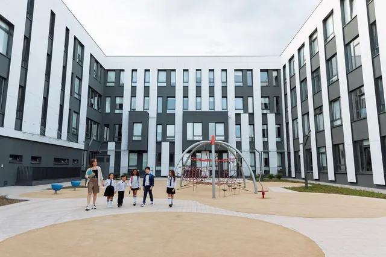
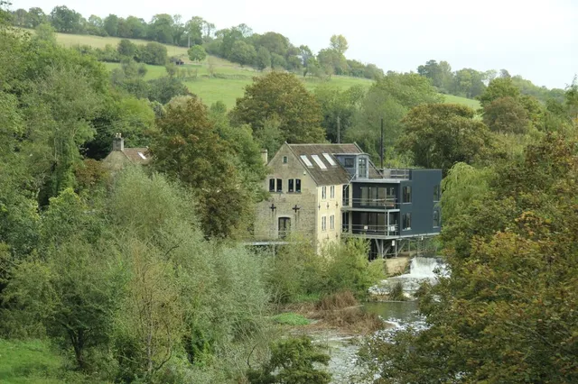
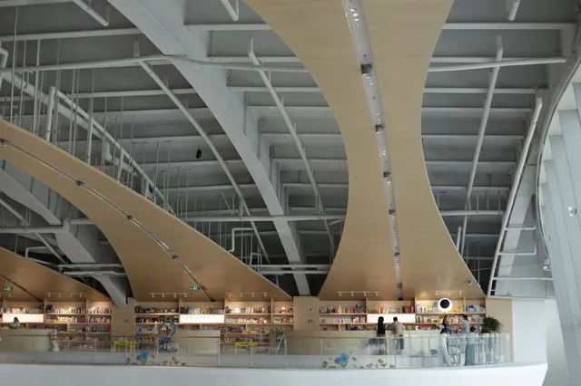
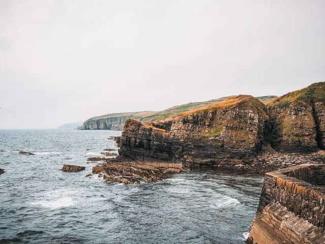
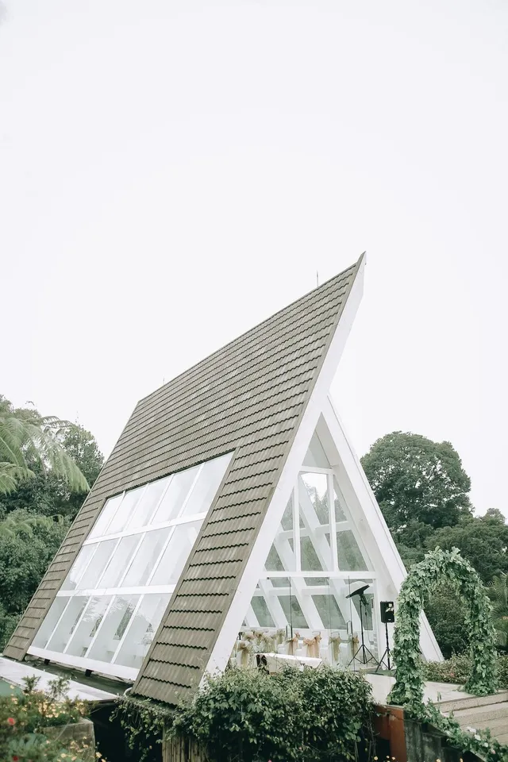
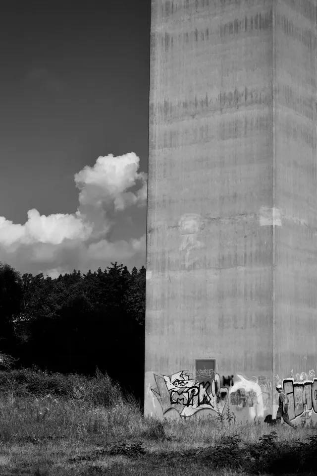
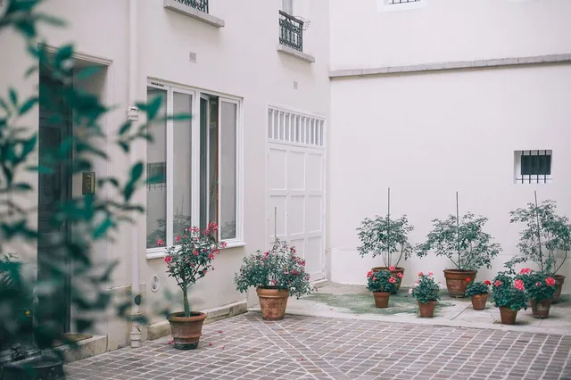

Winner
Passivhaus Trust Award
Best new school for airtightness and daylight, with a plant room the children can visit.
Seven awards and shortlists since 2021. Every one belongs to the team, the client and the builder as much as to us.

Winner
Best new school for airtightness and daylight, with a plant room the children can visit.

Winner
For giving a ruined mill a second life as a place where makers can work beside the water.

Winner
A quiet landmark for a working harbour town that feels as though it was always there.

Best residential
A family house that turns its back on the weather and its face to the sea.

Highly commended
For a timber structure that is joined, not fixed, and could be taken apart and reused.

Shortlisted
A workplace with a garden at its heart and a lift that nobody wants to use.

Winner
Twelve homes around a shared garden, with front doors that make people talk to each other.
We take on a small number of commissions each year. Tell us about the place and we will tell you honestly whether we are the right people.